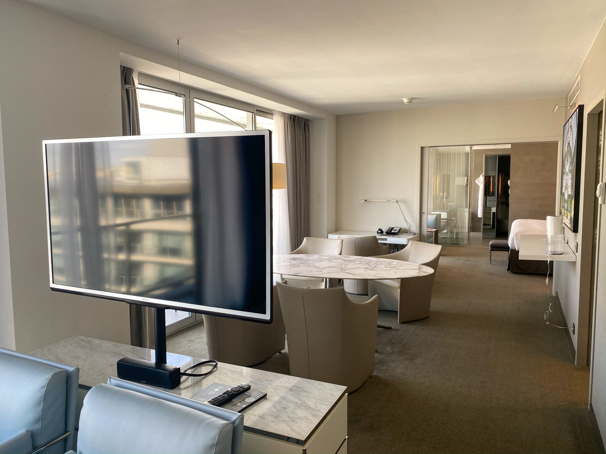
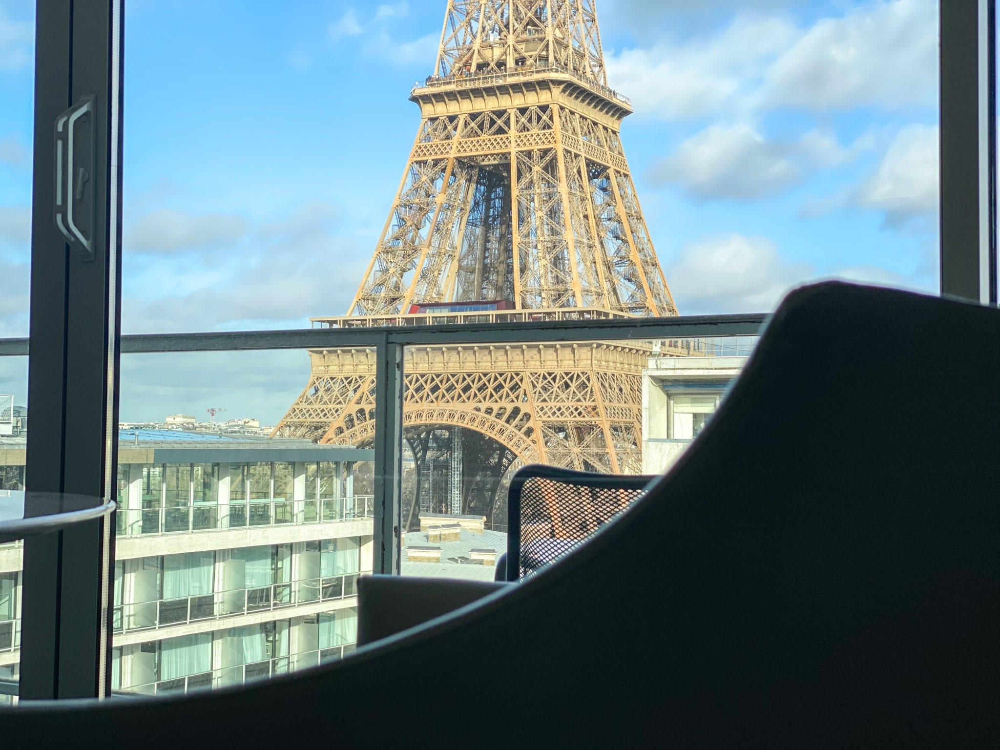
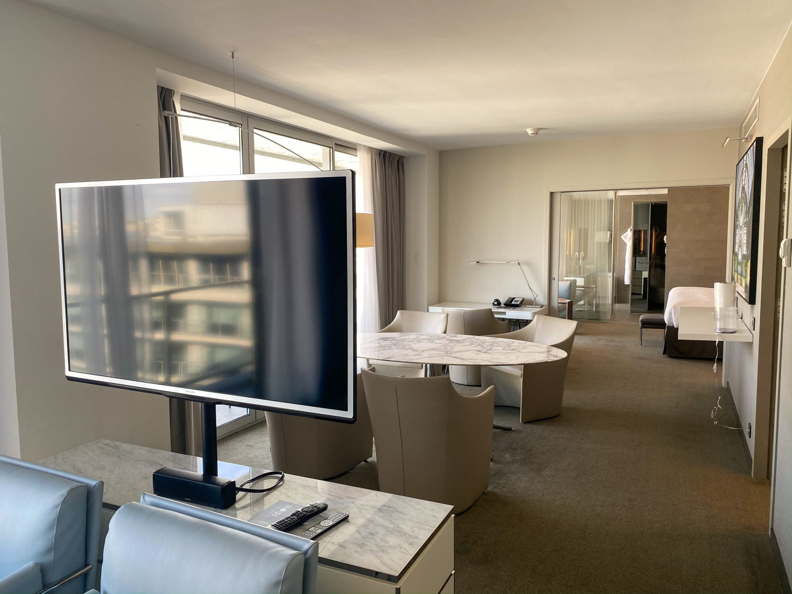
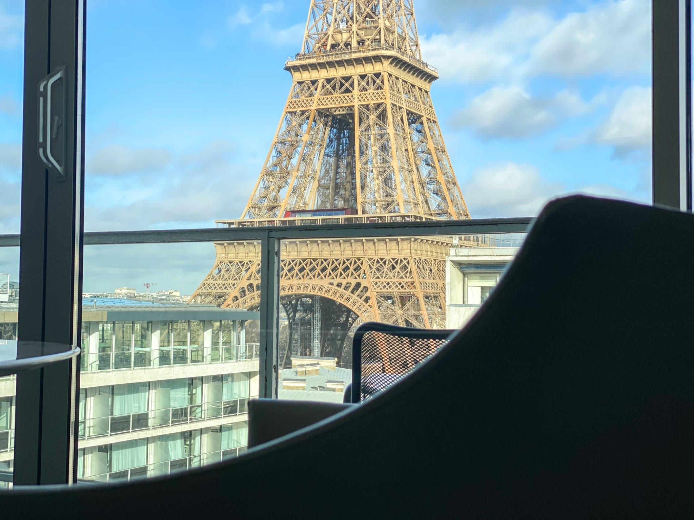

🗼 Eiffel Tower - The Iron Lady Of Paris
"The Eiffel Tower is not just a monument, it is a symbol of Dreams built in Iron."
🕰️ History of the Eiffel Tower:
 The Eiffel Tower was constructed between 1887 and 1889 as the centerpiece of the 1889 World’s Fair (Exposition Universelle), which was held to celebrate the 100th anniversary of the French Revolution.
It was designed by Gustave Eiffel, a French engineer, along with his team. Initially, many artists and writers criticized the tower, calling it ugly and unnecessary. Surprisingly, it later became one of the most loved and recognizable structures in the world.
Originally, the Eiffel Tower was meant to stand for only 20 years, but its value as a radio transmission tower saved it from demolition.
“What was once criticized became the pride of a nation.”
🏗️ Construction & Design:
The Eiffel Tower was constructed between 1887 and 1889 as the centerpiece of the 1889 World’s Fair (Exposition Universelle), which was held to celebrate the 100th anniversary of the French Revolution.
It was designed by Gustave Eiffel, a French engineer, along with his team. Initially, many artists and writers criticized the tower, calling it ugly and unnecessary. Surprisingly, it later became one of the most loved and recognizable structures in the world.
Originally, the Eiffel Tower was meant to stand for only 20 years, but its value as a radio transmission tower saved it from demolition.
“What was once criticized became the pride of a nation.”
🏗️ Construction & Design:

 eifel 3.jpg) Height: 330 meters (1,083 feet) including antennas
Made of 18,038 iron parts
Held together by over 2.5 million rivets
Weighs approximately 10,100 tons
The tower has three levels open to visitors:
First Level – exhibitions and glass floors
Second Level – restaurants and panoramic views
Top Level – breathtaking views of Paris
⭐ Why People Visit the Eiffel Tower:
Height: 330 meters (1,083 feet) including antennas
Made of 18,038 iron parts
Held together by over 2.5 million rivets
Weighs approximately 10,100 tons
The tower has three levels open to visitors:
First Level – exhibitions and glass floors
Second Level – restaurants and panoramic views
Top Level – breathtaking views of Paris
⭐ Why People Visit the Eiffel Tower:

 People from all over the world visit the Eiffel Tower because:
It is a global symbol of Paris and France
Offers stunning views of the entire city
Famous for romantic experiences 💖
Hosts restaurants, exhibitions, and light shows
Perfect spot for photography and memories
“To visit Paris and not see the Eiffel Tower is to miss its heartbeat.”
✨ Speciality of the Eiffel Tower:
People from all over the world visit the Eiffel Tower because:
It is a global symbol of Paris and France
Offers stunning views of the entire city
Famous for romantic experiences 💖
Hosts restaurants, exhibitions, and light shows
Perfect spot for photography and memories
“To visit Paris and not see the Eiffel Tower is to miss its heartbeat.”
✨ Speciality of the Eiffel Tower:

 🔹 1. Night Illumination
Every night, the Eiffel Tower sparkles with 20,000 golden lights, creating a magical view.
🔹 2. Romantic Symbol
It is known worldwide as a symbol of love and romance. Many couples get engaged here.
🔹 3. Engineering Marvel
For its time, the Eiffel Tower was a technological wonder, proving that iron structures could be both strong and beautiful.
“The Eiffel Tower doesn’t touch the sky; it connects people to it.”
🔹 1. Night Illumination
Every night, the Eiffel Tower sparkles with 20,000 golden lights, creating a magical view.
🔹 2. Romantic Symbol
It is known worldwide as a symbol of love and romance. Many couples get engaged here.
🔹 3. Engineering Marvel
For its time, the Eiffel Tower was a technological wonder, proving that iron structures could be both strong and beautiful.
“The Eiffel Tower doesn’t touch the sky; it connects people to it.”
🏨 Hotels Near the Eiffel Tower
1. Pullman Paris Tour Eiffel
  
⭐️4.6 / Hotel / $356
📍 Address: 18 Avenue De Suffren & 22 Rue Jean Rey Entrée Au, 75015 Paris, France
📞 Phone: +33 1 44 38 56 00
"A luxury hotel just a few minutes’ walk from the Eiffel Tower — perfect for travelers who want comfort and convenience near the landmark. Known for modern rooms and Eiffel views. �
WFEO"
 
⭐️4.6 / Hotel / $356
📍 Address: 18 Avenue De Suffren & 22 Rue Jean Rey Entrée Au, 75015 Paris, France
📞 Phone: +33 1 44 38 56 00
"A luxury hotel just a few minutes’ walk from the Eiffel Tower — perfect for travelers who want comfort and convenience near the landmark. Known for modern rooms and Eiffel views. �
WFEO"
2. Hotel Eiffel Seine


.jpg) ⭐️4.7 / Hotel / $139
📍 Address: 3 Boulevard de Grenelle, 75015 Paris, France
📞 Phone: +33 1 45 78 14 81
"A highly rated mid-range hotel with stylish décor near the Seine River — ideal for travelers wanting easy access to the Eiffel Tower area. �
WFEO"
⭐️4.7 / Hotel / $139
📍 Address: 3 Boulevard de Grenelle, 75015 Paris, France
📞 Phone: +33 1 45 78 14 81
"A highly rated mid-range hotel with stylish décor near the Seine River — ideal for travelers wanting easy access to the Eiffel Tower area. �
WFEO"
🍽️ Restaurants Near the Eiffel Tower
1. Jules Verne

.jpg)
.jpg) ⭐️4.5 / Haute French restaurant / €100+
📍 Address: Avenue Gustave Eiffel 2ème, Eiffel Tower, Av. Anatole France, 75007 Paris, France
📞 Phone: +33 1 83 77 34 34
"A Michelin-starred restaurant inside the Eiffel Tower offering fine French cuisine with a spectacular view — unforgettable for a special dinner."
Wikipedia"
⭐️4.5 / Haute French restaurant / €100+
📍 Address: Avenue Gustave Eiffel 2ème, Eiffel Tower, Av. Anatole France, 75007 Paris, France
📞 Phone: +33 1 83 77 34 34
"A Michelin-starred restaurant inside the Eiffel Tower offering fine French cuisine with a spectacular view — unforgettable for a special dinner."
Wikipedia"
2. Chez Pippo

 r2.jpg)
 ⭐️4.6 / Italian restaurant / €20–30
📍 Address: 31 Avenue de la Bourdonnais, 75007 Paris, France
📞 Phone: +33 1 73 70 54 50
"A classic Italian restaurant very close to the Eiffel Tower, loved by both locals and visitors for its cozy atmosphere and delicious pasta.
(Great for lunch or casual dinner)."
⭐️4.6 / Italian restaurant / €20–30
📍 Address: 31 Avenue de la Bourdonnais, 75007 Paris, France
📞 Phone: +33 1 73 70 54 50
"A classic Italian restaurant very close to the Eiffel Tower, loved by both locals and visitors for its cozy atmosphere and delicious pasta.
(Great for lunch or casual dinner)."
☕ Best Cafés Near the Eiffel Tower
1. Zia


 ⭐️4.6 / Cafe / €20–30
📍 Address: 22 Avenue de Tourville, 75007 Paris, France
📞 Phone: +33 1 44 18 90 71
"Zia is a cozy café just a short walk from the Eiffel Tower — perfect for coffee, brunch, pastries, or light bites before or after your visit.
It’s well-loved for its relaxed atmosphere and friendly service. Many travelers enjoy grabbing a cappuccino here while exploring the 7th arrondissement."
⭐️4.6 / Cafe / €20–30
📍 Address: 22 Avenue de Tourville, 75007 Paris, France
📞 Phone: +33 1 44 18 90 71
"Zia is a cozy café just a short walk from the Eiffel Tower — perfect for coffee, brunch, pastries, or light bites before or after your visit.
It’s well-loved for its relaxed atmosphere and friendly service. Many travelers enjoy grabbing a cappuccino here while exploring the 7th arrondissement."
2. Sunflower Café


 s4.jpg) ⭐️4.7 / Cafe / €1–10
Closed
📍 Address: 41 Avenue de Suffren, 75007 Paris, France
📞 Phone: +33 1 42 73 68 84
"Sunflower Café is a small, charming café near Champ de Mars — ideal for a quick coffee, croissant, or light refreshment right after visiting the Eiffel Tower.
Great for budget-friendly options and local vibes while you relax."
⭐️4.7 / Cafe / €1–10
Closed
📍 Address: 41 Avenue de Suffren, 75007 Paris, France
📞 Phone: +33 1 42 73 68 84
"Sunflower Café is a small, charming café near Champ de Mars — ideal for a quick coffee, croissant, or light refreshment right after visiting the Eiffel Tower.
Great for budget-friendly options and local vibes while you relax."